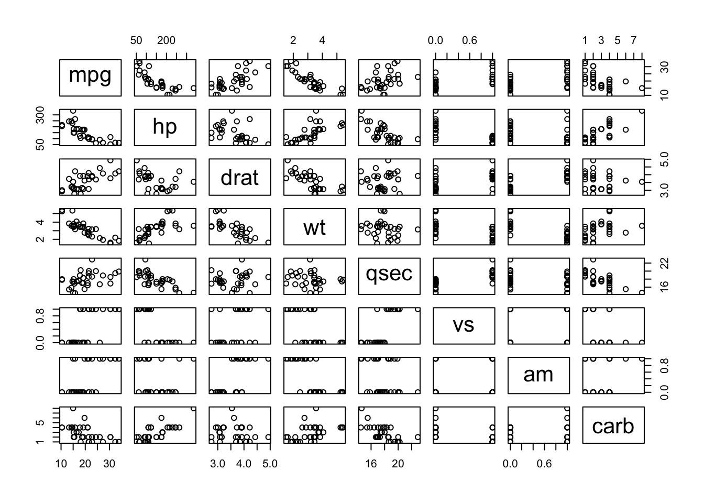

Chapter 8 Data Pre Processing
Note: This section is in development
In an earlier section we looked at the correlations between the variables in the mtcars data frame.
8.2 Scaling Considerations
One thing we skipped over entirely is the issue of data scale. Well, actually, I did mention it at the beginning but then moved on. This is actually a big deal since the data we have been working on has variables measures on different scales. In fact, some of them are actually not continuous quantities. The columns of mtcars that might be categories or factors include cyl, am, vs, gear, and carb. Why do I say this ? We’ll they only take on a specific set of values over all observations
sapply(new_mtcars,function(x) length(unique(x)))## mpg hp drat wt qsec vs am carb
## 25 22 22 29 30 2 2 6So, technically, we could turn these into factors before doing anything with the data. We’ll handle these types of variables momentarily. But for now let’s look at a pairs plot of the new_mtcars data frame.
pairs(new_mtcars)
sapply(new_mtcars,range)## mpg hp drat wt qsec vs am carb
## [1,] 10.4 52 2.76 1.513 14.5 0 0 1
## [2,] 33.9 335 4.93 5.424 22.9 1 1 8Anyway, the caret package provides a way to easily scale the data prior to the processing of it. We can do this as we call the train function. Note that the scaling happens underneath the covers. First, let’s create a Train / Test pair.
idx <- createDataPartition(new_mtcars$mpg, p = .8,
list = FALSE,
times = 1)
Train <- mtcars[ idx,]
Test <- mtcars[-idx,]my_ctrl <- trainControl(
method = "cv",
number = 3
)
# Check the preProcess argument below
mod_rf <- train(mpg ~ .,
data=Train,
method = "rf",
preProcess = c("center","scale"),
trControl = my_ctrl
)
compute_rmse(predict(mod_rf,Train),Train$mpg)## [1] 1.025943Another possibility exists in that we could use the preProcess function in advance of calling the train function. We’ll work with the Train and Test data from above.
proc_train <- preProcess(Train,method = c("center","scale"))
scaled_train <- predict(proc_train, Train)
# Then we would use the data along with the train function
mod_lm_sc <- train(mpg~.,data=scaled_train,method="lm")If we wanted to then predict against a new data set we would then need to scale the new data.
Test_sc <- data.frame(scale(Test))
predict(mod_lm_sc,Test_sc)## Datsun 710 Valiant Cadillac Fleetwood
## 0.67552116 0.08061224 -1.65468415
## Fiat X1-9
## 0.89855076compute_rmse(predict(mod_lm_sc,Test_sc),Test_sc$mpg)## [1] 0.2783554